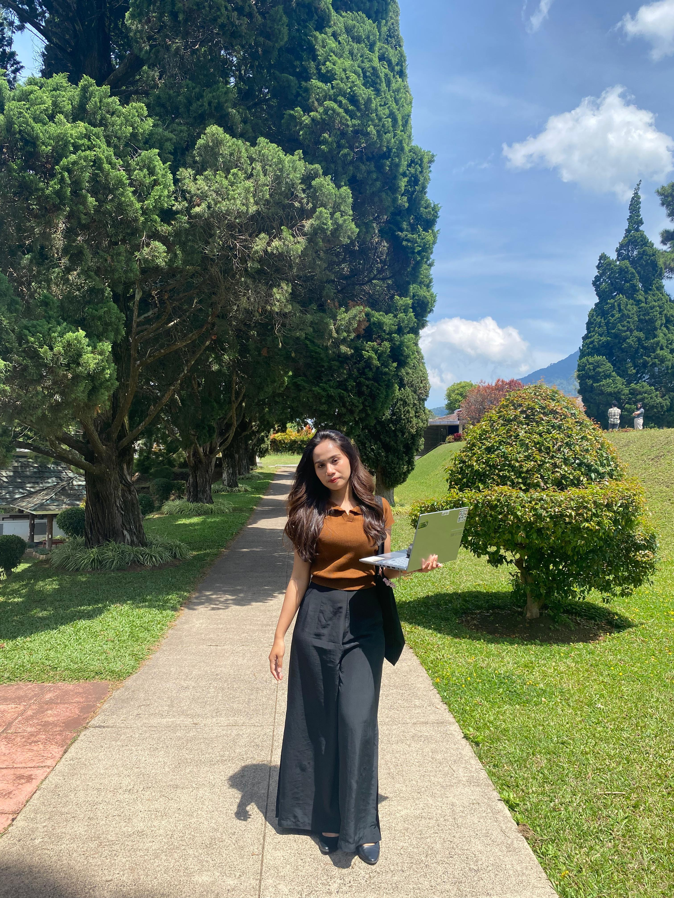

👩‍🎓 About Me
👤 Name: Karenina Koreludji
🉠Date of Birth: April 13, 2004
📠Major: Information Systems
ID: 2382012
🌟 Biography 🌟
Born on April 13, 2004, I am a passionate individual currently pursuing a degree in Information Systems. From a young age, I have always been fascinated by technology and how it can be used to solve real-world problems. In addition to my studies, I enjoy web development, where I can express my creativity and technical skills.
Some of my hobbies include:
- 🤠Singing
- 💄 Makeup
- 📺 Watching drama films
I also love listening to music and exploring new makeup techniques in my free time. My goal is to combine my interests in technology and design to create impactful projects that inspire others.
📠Education
- Elementary School
- Middle School
- High School